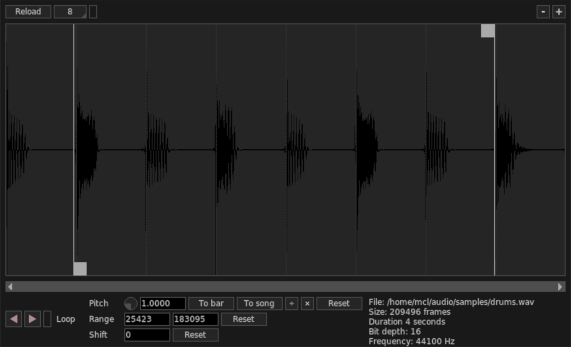
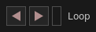
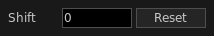

Giada is shipped with a powerful editor for fine samples manipulation. While the main window provides a fast and basic interaction, inside the Sample Editor you can tweak several parameters such as start/end points, pitch and much more.
The Sample Editor also provides some basic tools for cutting, trimming or silencing your sample. Those are destructive actions; if you damage the sample you have to reload it from disk. Don't worry, the damage will occur only in memory; the original file won't be touched!
On the lower right corner of the Sample Editor you will find some additional information on the sample currently loaded, such as the original file path, the size (in audio frames), the duration (in seconds), the bit depth and the frequency.
You can zoom in and out by clicking on the Zoom buttons located on the top-right corner, or by pressing ctrl (cmd on macOS) and scrolling up or down with the mouse wheel.

The transport buttons allow you to listen to the audio sample currently loaded. By checking the Loop checkbox the sample will play back in loop. You can also press the spacebar key to start and stop playing. The playhead can be moved around by clicking on the waveform area.
The Pitch knob streches or compresses the sample, making it sound faster or slower. It works exactly as a turntable pitch control slider. You can change the global resampling quality in the Configuration Window.
You can spread the sample accross the whole song or the current bar by pressing To song and To bar buttons. Two additional operators, × and ÷ will double or halve the sample's duration, while the Reset button restores the pitch to 1.0.
The range tool is used to set the play range of the sample through the begin and end points. Those points are represented in the waveform area by two vertical lines with a square handle: click on that handle and drag it around to set the points quickly, or use the numeric input fields to specify the exact position (in samples). The Reset button restores the default configuration.

The shift tool allows you to shift the sample horizontally. This is useful in case you want to make the sample start to a certain position, without spending too much time messing around with cut and paste. The shift value is specified in samples and can takes both positive and negative values.
Select a portion of the waveform with the mouse and click on it with the right button: a menu will appear, giving you some editing tools:
Is your sample messed up after the wrong editing? You can reload it from disk by clicking on the Reload button .